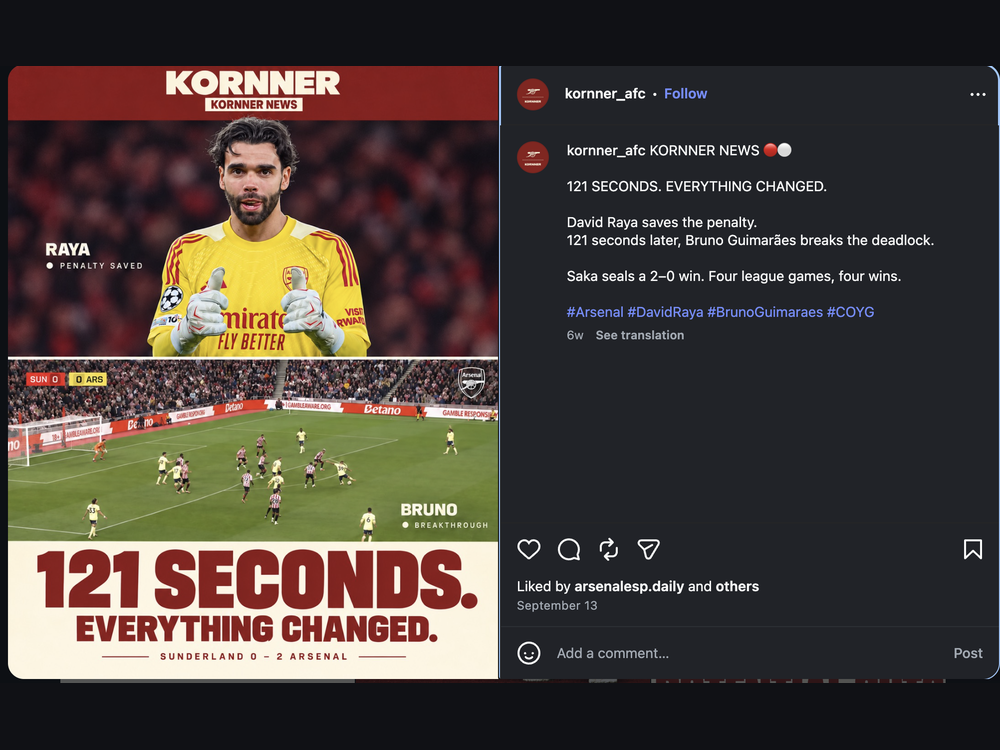
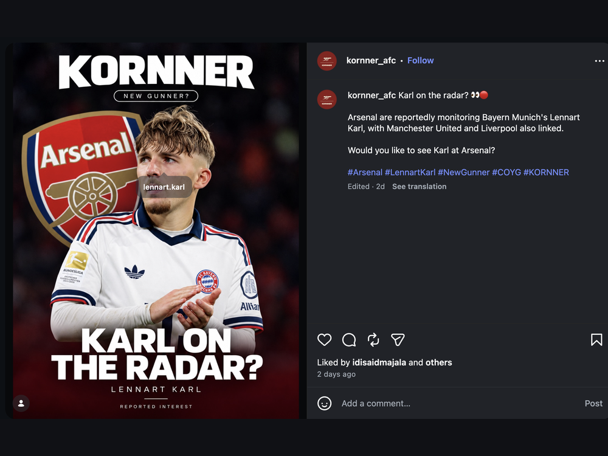
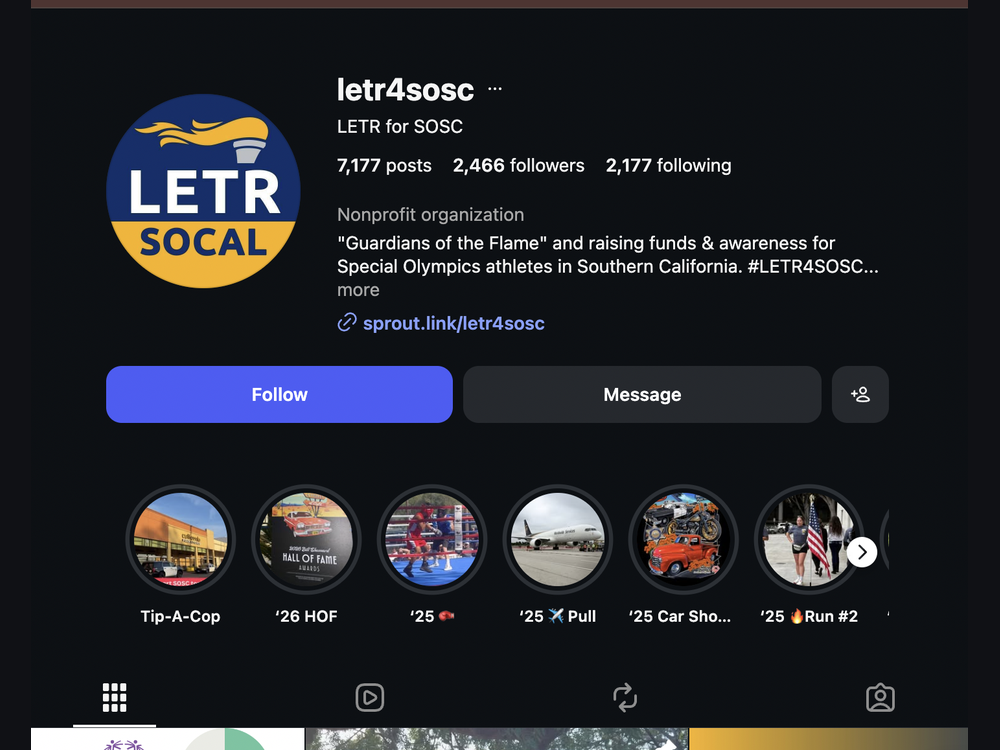
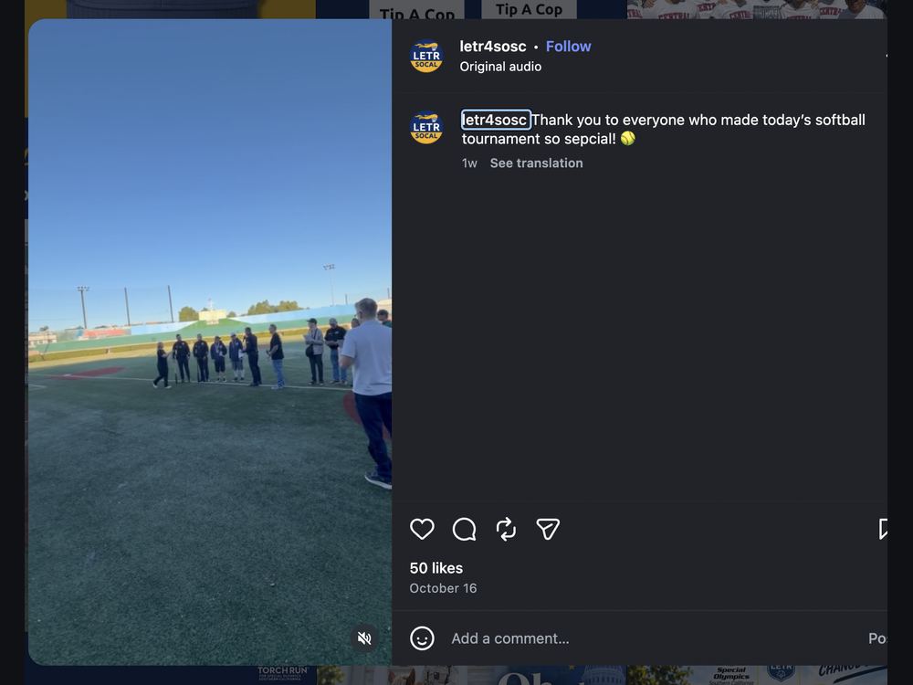
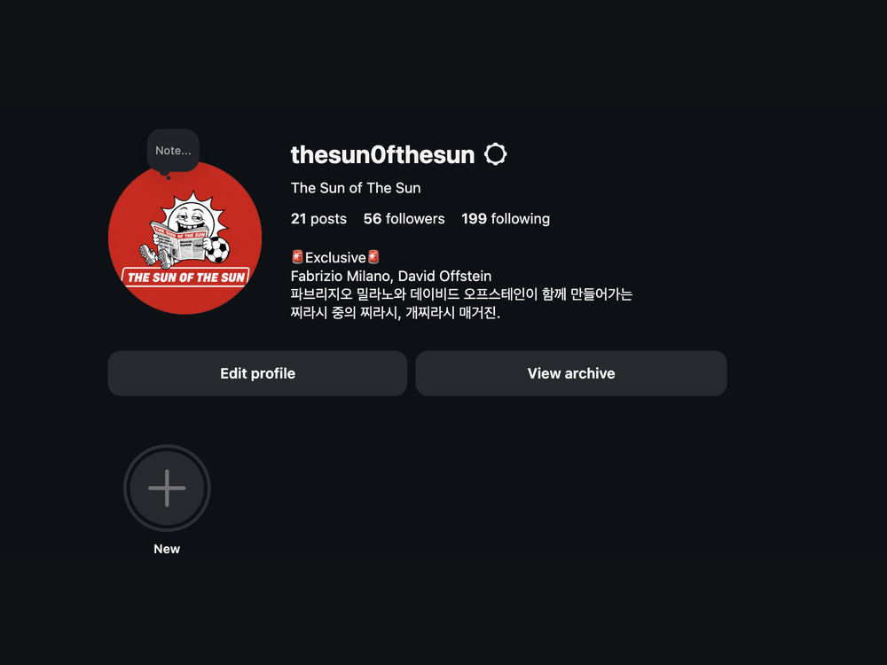

Hi, I'm Dongsu Kim, a Media and Cultural Studies student at the University of California, Riverside, expected to graduate in June 2027. I grew up across Korea, Europe, and the United States, including about five years in Greece during middle school and early high school. Moving between countries taught me how to adapt quickly, communicate across languages and cultures, and see the same story from more than one angle. Those experiences shape how I think about media today: every audience has its own context, and good content meets people where they are.
Football has been the one constant through every move. In 2026, I launched Kornner (@kornner_afc), an English-language Instagram account focused on Arsenal and European football analysis. I watch and research matches, break down tactics, and turn complex ideas into clear visual posts that fans can understand in seconds. Shortly after, I co-founded The Sun of the Sun (@thesun0fthesun) with a friend, a Korean-language account that uses satire and humor to comment on the football world. Running both accounts has given me hands-on experience with content planning, writing for two very different audiences, graphic design, and reading engagement data to learn what actually connects with people.
Outside of my own projects, I volunteer with Special Olympics Southern California as the Instagram Administrator for the Law Enforcement Torch Run (LETR) program. In this role, I help keep the account active and engaged with the community and contribute original posts that support the organization's mission of inclusion through sport. Before that, I worked as a server at Seoul Street, where I learned to stay calm in a fast-paced environment, work closely with a team, and make sure every guest had a good experience. That job taught me that reliability, communication, and attitude matter just as much as skill.
At UCR, my coursework in Media and Cultural Studies helps me understand how sports, media, and identity connect, from how clubs build global fanbases to how athletes are represented across cultures. My long-term goal is to work in sports representation, helping talented Korean footballers make the move to European clubs. I believe my multicultural background, language skills, and experience creating sports media give me a unique perspective in that space. I'm always open to connecting with people in sports, media, and marketing, so feel free to reach out through any of the links below.
• Manage the Instagram account for the Law Enforcement Torch Run (LETR) program
• Keep the account active by engaging with the community through likes, shares, and comments
• Plan and publish original monthly posts that support the organization's mission
• Coordinate with the Marketing and Communications team on content
• Co-run a Korean-language Instagram account creating satirical football content
• Write, design, and edit humorous posts on current football news
• Develop recurring content series to build a loyal audience
• Founded an English-language Instagram account focused on Arsenal and European football analysis
• Research matches and break down tactics into clear, visual posts
• Design graphics and carousels for every post
• Track engagement to improve content strategy and grow the audience
• Provided friendly and efficient service in a fast-paced restaurant
• Worked closely with kitchen and front-of-house staff to keep service running smoothly
• Handled customer requests and orders accurately during busy hours




